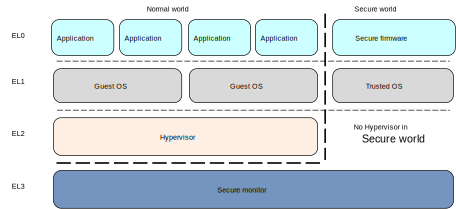

<!DOCTYPE html>
<html lang="en">
    <head>
        <meta charset="utf-8">
        <meta http-equiv="X-UA-Compatible" content="IE=edge">
        <meta name="viewport" content="width=device-width, initial-scale=1.0">
<link rel="stylesheet" href="https://blog.kernel.love/theme/css/style.min.css?fc5adb95">

        <link rel="dns-prefetch" href="//fonts.googleapis.com">
        <link rel="preconnect" href="https://fonts.gstatic.com/" crossorigin>

        <meta name="author" content="Yori Fang" />

        <meta name="description" content="这篇文章我们结合ARM虚拟化原理来梳理一下aarch64平台上KVM的具体实现。 对于熟悉x86上KVM内核模块的人来说，理清思路应该不难， 学习的时候重点对照一下x86来比较一下aarch64和x86两个平台上的异同点， 相得益彰进一步加深对系统虚拟机的 …
" />
        <meta property="og:type" content="article" />
        <meta name="twitter:card" content="summary">

<meta name="keywords" content="KVM, aarch64, virtualization, " />

<meta property="og:title" content="KVM for ARM64 "/>
<meta property="og:url" content="https://blog.kernel.love/drafts/kvm-for-arm.html" />
<meta property="og:description" content="这篇文章我们结合ARM虚拟化原理来梳理一下aarch64平台上KVM的具体实现。 对于熟悉x86上KVM内核模块的人来说，理清思路应该不难， 学习的时候重点对照一下x86来比较一下aarch64和x86两个平台上的异同点， 相得益彰进一步加深对系统虚拟机的 …" />
<meta property="og:site_name" content="kernelgo" />
<meta property="og:article:author" content="Yori Fang" />
<meta property="og:article:published_time" content="2020-04-11T23:00:00+08:00" />
<meta name="twitter:title" content="KVM for ARM64 ">
<meta name="twitter:description" content="这篇文章我们结合ARM虚拟化原理来梳理一下aarch64平台上KVM的具体实现。 对于熟悉x86上KVM内核模块的人来说，理清思路应该不难， 学习的时候重点对照一下x86来比较一下aarch64和x86两个平台上的异同点， 相得益彰进一步加深对系统虚拟机的 …">

        <title>KVM for ARM64  · kernelgo
</title>
<script>
    (function(i,s,o,g,r,a,m){i['GoogleAnalyticsObject']=r;i[r]=i[r]||function(){
     (i[r].q=i[r].q||[]).push(arguments)},i[r].l=1*new Date();a=s.createElement(o),
     m=s.getElementsByTagName(o)[0];a.async=1;a.src=g;m.parentNode.insertBefore(a,m)
     })(window,document,'script','//www.google-analytics.com/analytics.js','ga');
    ga('create', 'UA-107392039-1', 'auto');
    ga('send', 'pageview');
</script>


    </head>
    <body>
        <div id="content">
            <div class="navbar navbar-static-top">
                <div class="navbar-inner">
                    <div class="container-fluid">
                        <a class="btn btn-navbar" data-toggle="collapse" data-target=".nav-collapse">
                            <span class="icon-bar"></span>
                            <span class="icon-bar"></span>
                            <span class="icon-bar"></span>
                        </a>
                        <a class="brand" href="https://blog.kernel.love/"><span class=site-name>kernelgo</span></a>
                        <div class="nav-collapse collapse">
                            <ul class="nav pull-right top-menu">
                                <li >
                                    <a href=
                                       https://blog.kernel.love
                                    >Home</a>
                                </li>
                                <li ><a href="https://blog.kernel.love/pages/about.html">About</a></li>
                                <li ><a href="https://blog.kernel.love/categories.html">Categories</a></li>
                                <li ><a href="https://blog.kernel.love/tags.html">Tags</a></li>
                                <li ><a href="https://blog.kernel.love/archives.html">Archives</a></li>
                                <li><form class="navbar-search" action="https://blog.kernel.love/search.html" onsubmit="return validateForm(this.elements['q'].value);"> <input type="text" class="search-query" placeholder="Search" name="q" id="tipue_search_input"></form></li>
                            </ul>
                        </div>
                    </div>
                </div>
            </div>
            <div class="container-fluid">
                <div class="row-fluid">
                    <div class="span1"></div>
                    <div class="span10">
<article itemscope>
<div class="row-fluid">
    <header class="page-header span10 offset2">
        <h1>
            <a href="https://blog.kernel.love/drafts/kvm-for-arm.html">
                KVM for ARM64
            </a>
        </h1>
    </header>
</div>

<div class="row-fluid">
        <div class="span8 offset2 article-content">
            
            <p>这篇文章我们结合ARM虚拟化原理来梳理一下aarch64平台上KVM的具体实现。
对于熟悉x86上KVM内核模块的人来说，理清思路应该不难，
学习的时候重点对照一下x86来比较一下aarch64和x86两个平台上的异同点，
相得益彰进一步加深对系统虚拟机的理解。</p>
<h2>0. ARM64硬件辅助虚拟化原理回顾</h2>
<p>引入硬件辅助虚拟化之后ARM64的运行级别共有4个级别：</p>
<p></p>
<ul>
<li>新增一个特权模式EL2，是hypversior的运行级别。</li>
<li>EL0（Guest App）和EL1模式下执行一些特权操作会陷出到EL2模式进行模拟。</li>
<li>ARM64也提供一些特定寄存器，guest可以直接访问这些寄存器从而加速虚拟机切换。</li>
<li>中断路由</li>
<li>新增HVC(Hypervisor Call)指令，从而可以让guest os必要时候可以主动进入EL2，
  执行特定的hypervisor接口调用。</li>
</ul>
<p>在x86上GuestOS用户态和内核态运行在Non-Root模式的Ring0和Ring3模式下，
Host内核态和KVM运行在Root模式下。Non-Root模式和Root模式二者是正交的，
Guest执行敏感指令触发模式切换。
在ARM64平台上硬件辅助虚拟化引入了VHE<a href="https://developer.arm.com/architectures/learn-the-architecture/armv8-a-virtualization/virtualization-host-extensions">1</a>(Virtualization Host Extensions)特性，
在ARM64下根据CPU是否支持VHE分两种情况：</p>
<ul>
<li>1.如果支持VHE特性，那么HostOS内核和KVM都在EL2下执行，减少EL1和EL2模式之间的切换次数；</li>
<li>2.在不支持VHE的CPU上，KVM部分代码必须在EL2执行（例如捕获Guest异常退出），
  其他KVM代码和Host Linux内核都在EL1下执行，Hypervisor在进行资源管理和虚拟机调度的时候需要
  在EL1和EL2之间进Context Switch所以显然效率要低一些。</li>
</ul>
<h2>1.ARM64 KVM内核代码基本流程分析</h2>
<h3>1.1 KVM初始化关键</h3>
<div class="highlight"><pre><span></span><code><span class="n">arm_init</span>
<span class="n">call</span><span class="w"> </span><span class="n">kvm_init</span>
<span class="w">    </span><span class="o">-&gt;</span><span class="w"> </span><span class="n">kvm_arch_init</span><span class="w">    </span><span class="c1">// virt/kvm/arm/arm.c</span>
<span class="w">        </span><span class="o">-&gt;</span><span class="w"> </span><span class="o">!</span><span class="n">is_hyp_mode_available</span><span class="w">    </span><span class="cm">/* 判断是否支持SVC模式 */</span>
<span class="w">        </span><span class="o">-&gt;</span><span class="w"> </span><span class="n">is_kernel_in_hyp_mode</span>
<span class="w">        </span><span class="o">-&gt;</span><span class="w"> </span><span class="n">kvm_arch_requires_vhe</span><span class="w">     </span><span class="cm">/* 判断 */</span>
<span class="w">        </span><span class="n">foreach_online_cpu</span><span class="p">(</span><span class="n">cpu</span><span class="p">)</span><span class="w"> </span><span class="p">{</span>
<span class="w">            </span><span class="n">smp_call_function_single</span><span class="w"> </span><span class="o">-&gt;</span><span class="w"> </span><span class="n">check_kvm_target_cpu</span>

<span class="w">        </span><span class="p">}</span>
<span class="w">        </span><span class="o">-&gt;</span><span class="w"> </span><span class="n">init_common_resources</span>
<span class="w">        </span><span class="o">-&gt;</span><span class="w"> </span><span class="n">kvm_arm_init_sve</span>
<span class="w">        </span><span class="o">-&gt;</span><span class="w"> </span><span class="n">init_hyp_mode</span>
<span class="w">        </span><span class="o">-&gt;</span><span class="w"> </span><span class="n">init_subsystems</span>
<span class="w">        </span><span class="o">-&gt;</span><span class="w"> </span>
</code></pre></div>

<h3>1.2 Two Stage地址翻译</h3>
<div class="highlight"><pre><span></span><code><span class="n">kvm_handle_guest_abort</span>
<span class="w">  </span><span class="o">-&gt;</span><span class="w"> </span><span class="n">user_mem_abort</span>
</code></pre></div>

<h2>1. KVM for ARM</h2>
<p>Supervisor calls (SVC)：请求特权操作或者从操作系统那边获取系统资源，使用svc指令。
指令格式是： SVC + NUMBER</p>
<h2>参考文献</h2>
<ul>
<li>1.[https://developer.arm.com/architectures/learn-the-architecture/armv8-a-virtualization/virtualization-host-extensions]https://developer.arm.com/architectures/learn-the-architecture/armv8-a-virtualization/virtualization-host-extensions</li>
<li>1.[]</li>
</ul>


             
 
            
            
            


            <hr/>
        </div>
        <section id="article-sidebar" class="span2">
            <h4>Published</h4>
            <time itemprop="dateCreated" datetime="2020-04-11T23:00:00+08:00">Sat 11 April 2020</time>
            <h4>Category</h4>
            <a class="category-link" href="https://blog.kernel.love/categories.html#virtualization-ref">virtualization</a>
            <h4>Tags</h4>
            <ul class="list-of-tags tags-in-article">
                <li><a href="https://blog.kernel.love/tags.html#aarch64-ref">aarch64
</a></li>
                <li><a href="https://blog.kernel.love/tags.html#kvm-ref">KVM
</a></li>
            </ul>
<h4>Contact</h4>
<div id="sidebar-social-link">
    <a href="https://github.com/fangying" title="" target="_blank" rel="nofollow noopener noreferrer">
        <svg xmlns="http://www.w3.org/2000/svg" aria-label="GitHub" role="img" viewBox="0 0 512 512"><rect width="512" height="512" rx="15%" fill="#1B1817"/><path fill="#fff" d="M335 499c14 0 12 17 12 17H165s-2-17 12-17c13 0 16-6 16-12l-1-50c-71 16-86-28-86-28-12-30-28-37-28-37-24-16 1-16 1-16 26 2 40 26 40 26 22 39 59 28 74 22 2-17 9-28 16-35-57-6-116-28-116-126 0-28 10-51 26-69-3-6-11-32 3-67 0 0 21-7 70 26 42-12 86-12 128 0 49-33 70-26 70-26 14 35 6 61 3 67 16 18 26 41 26 69 0 98-60 120-117 126 10 8 18 24 18 48l-1 70c0 6 3 12 16 12z"/></svg>
    </a>
</div>
            


            


        </section>
</div>
</article>
<!-- Root element of PhotoSwipe. Must have class pswp. -->
<div class="pswp" tabindex="-1" role="dialog" aria-hidden="true">

    <!-- Background of PhotoSwipe.
         It's a separate element as animating opacity is faster than rgba(). -->
    <div class="pswp__bg"></div>

    <!-- Slides wrapper with overflow:hidden. -->
    <div class="pswp__scroll-wrap">

        <!-- Container that holds slides.
            PhotoSwipe keeps only 3 of them in the DOM to save memory.
            Don't modify these 3 pswp__item elements, data is added later on. -->
        <div class="pswp__container">
            <div class="pswp__item"></div>
            <div class="pswp__item"></div>
            <div class="pswp__item"></div>
        </div>

        <!-- Default (PhotoSwipeUI_Default) interface on top of sliding area. Can be changed. -->
        <div class="pswp__ui pswp__ui--hidden">

            <div class="pswp__top-bar">

                <!--  Controls are self-explanatory. Order can be changed. -->

                <div class="pswp__counter"></div>

                <button class="pswp__button pswp__button--close" title="Close (Esc)"></button>

                <button class="pswp__button pswp__button--share" title="Share"></button>

                <button class="pswp__button pswp__button--fs" title="Toggle fullscreen"></button>

                <button class="pswp__button pswp__button--zoom" title="Zoom in/out"></button>

                <!-- Preloader demo https://codepen.io/dimsemenov/pen/yyBWoR -->
                <!-- element will get class pswp__preloader--active when preloader is running -->
                <div class="pswp__preloader">
                    <div class="pswp__preloader__icn">
                      <div class="pswp__preloader__cut">
                        <div class="pswp__preloader__donut"></div>
                      </div>
                    </div>
                </div>
            </div>

            <div class="pswp__share-modal pswp__share-modal--hidden pswp__single-tap">
                <div class="pswp__share-tooltip"></div>
            </div>

            <button class="pswp__button pswp__button--arrow--left" title="Previous (arrow left)">
            </button>

            <button class="pswp__button pswp__button--arrow--right" title="Next (arrow right)">
            </button>

            <div class="pswp__caption">
                <div class="pswp__caption__center"></div>
            </div>

        </div>

    </div>

</div>                    </div>
                    <div class="span1"></div>
                </div>
            </div>
        </div>
<footer>
    <div>
        <span xmlns:dct="http://purl.org/dc/terms/" property="dct:title"> kernelgo"</span> by <a xmlns:cc="http://creativecommons.org/ns#" href="https://kernelgo.org" property="cc:attributionName" rel="cc:attributionURL">Yori Fang</a> is licensed under a <a rel="license" href="http://creativecommons.org/licenses/by-sa/3.0/deed.en_US">Creative Commons Attribution-ShareAlike 3.0 Unported License</a>.
    </div>


    <div id="fpowered">
        Powered by: <a href="http://getpelican.com/" title="Pelican Home Page" target="_blank" rel="nofollow noopener noreferrer">Pelican</a>
        Theme: <a href="https://elegant.oncrashreboot.com/" title="Theme Elegant Home Page" target="_blank" rel="nofollow noopener noreferrer">Elegant</a>
    </div>
</footer>            <script src="//code.jquery.com/jquery.min.js"></script>
        <script src="//netdna.bootstrapcdn.com/twitter-bootstrap/2.3.2/js/bootstrap.min.js"></script>
        <script src="https://blog.kernel.love/theme/js/elegant.prod.9e9d5ce754.js"></script>
        <script>
            function validateForm(query)
            {
                return (query.length > 0);
            }
        </script>

    <script>
    (function () {
        if (window.location.hash.match(/^#comment-\d+$/)) {
            $('#comment_thread').collapse('show');
        }
    })();
    window.onhashchange=function(){
        if (window.location.hash.match(/^#comment-\d+$/))
            window.location.reload(true);
    }
    $('#comment_thread').on('shown', function () {
        var link = document.getElementById('comment-accordion-toggle');
        var old_innerHTML = link.innerHTML;
        $(link).fadeOut(200, function() {
            $(this).text('Click here to hide comments').fadeIn(200);
        });
        $('#comment_thread').on('hidden', function () {
            $(link).fadeOut(200, function() {
                $(this).text(old_innerHTML).fadeIn(200);
            });
        })
    })
</script>

    </body>
    <!-- Theme: Elegant built for Pelican
        License : MIT -->
</html>